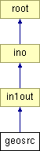

Main Page
Classes
Files
Class List
Class Index
Class Hierarchy
Class Members
geosrc Class Reference
#include <
geosrc.h
>
Inheritance diagram for geosrc:

List of all members.
Public Member Functions
geosrc
()
~geosrc
()
int
act
(void)
void
early
(
event
*)
Public Attributes
double
ed
int
dist
Constructor & Destructor Documentation
geosrc::geosrc
(
)
geosrc::~geosrc
(
)
Member Function Documentation
int geosrc::act
(
void
)
void geosrc::early
(
event
*
)
[virtual]
Reimplemented from
root
.
Member Data Documentation
int
geosrc::dist
double
geosrc::ed
The documentation for this class was generated from the following files:
src/src/
geosrc.h
src/src/
geosrc.c
Generated on Wed Jan 6 16:46:33 2010 for Luayats by
1.6.1
 1.6.1
1.6.1